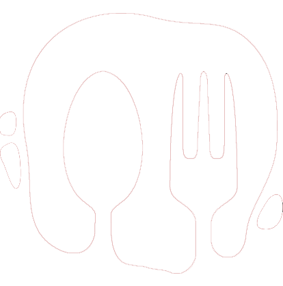

<nav class="navbar navbar-expand-lg navCustom">
    <div class="container-fluid">
        <div>
            
            <a class="navbar-brand" href="#" style="color: white;">Navbar</a>
        </div>
        <button class="navbar-toggler" type="button" data-bs-toggle="collapse" data-bs-target="#navbarNavAltMarkup"
            aria-controls="navbarNavAltMarkup" aria-expanded="false" aria-label="Toggle navigation">
            <span class="navbar-toggler-icon"></span>
        </button>
        <div class="collapse navbar-collapse" id="navbarNavAltMarkup">
            <div class="navbar-nav" style="color:white;">
                <a class="nav-link active" aria-current="page" href="#">Inicio</a>
                <a class="nav-link" href="#">Restaurantes</a>
                <a class="nav-link" href="#">Registrarse</a>
                <a class="nav-link" href="#">Login</a>
            </div>
        </div>
    </div>
</nav>